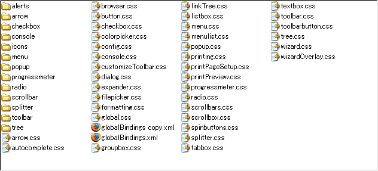
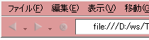

abstract
前のコンテンツでrdfを書き換えれば、テーマをFirefox内部で自分の管理下に置くことが出来ました
そしてここからがFirefoxのデザインを本格的に変更するための作業になるのですが、ここからが大変です
Firefoxテーマ内部にある膨大なcssファイルから、自分の書き換えたい箇所を探し出して、書き換えていかなければなりません
テーマのデザインを書き換えるにも、何処のどれを書き換えたら、欲しいデザインが出来るのか。コレに関しては、Mozillaの変化し続ける仕様と、十分に整備できていない文書の関連から。ある程度、ファイルの中身を解析しながら何処を書き換えたらいいのかを探さないといけません
つまり、テーマの作り替えに大事なことは、何処のフォルダの何のファイルで設定されているかを覚えること、そして知らないモノは探し出してしまう技能です。
そもそもXULってなんですか？
XULとはXMLフォーマットのデータ形式の一つで、HTMLがbodyとかdivとかのタグでWebページを書くのに対して、XULではwindowとかbuttonとtabとかいうタグ名を並べることでインターフェイスを作成することが出来ます
Mozillaの作成時に、OSに依存しないで拡張プログラム等を使って、なおかつカスタマイズ性を上げており、mozillaの強力な武器の一つになっています（こんなややこしい仕組みのせいで、他のブラウザより重くなりがちなんですが…）
あ、ちなみに読みはズールと言います
テーマの役割
XULは、windowsやbuttonというタグ名を組み合わせることでFirefoxのインターフェースを作成して、そこからJavaScriptを使って機能を呼び出すことが出来ますが、それだけではテーマのデザインが当てられません。そのためスタイルシートを当ててこれを装飾するのですが、そのために存在するのがテーマになります。
そのため、テーマの中身は多くのスタイルシートファイル(CSS)で構成されています
テーマはFirefoxのデフォルトのデザインをオーバーライド（上書き）する事でこれらのデザインを変えていきますが、その周辺には数多くの技術か関わっており、場合によっては修正を加えるのが困難だったり、かなり良く分析しないといけない場合もあるので知っておきましょう
中身を覗いてみよう
それではここから書き換えを始めます、まずは解凍したjarファイルのglobalフォルダに移動してください
CSSファイルがたくさんありますが、冷静に見て着るとdialog.cssやtree.css等なんだか名前で何処に対応しているのか推測できるファイルがあるのが分かっていただけるでしょうか？
ここにあるCSSファイルの中身を書き換えればMozillaのテーマのデザインを変更していくことが出来ます
とりあえず書き換えてみよう
それではここから書き換えを始めます。最初の最初ですから、効果が分かりやすい所が良いでしょう。
というわけで、toolbar.cssを開いてみてください
そして、最初の所にある
/* color_settings */
toolbox, toolbar, menubar {
border-color:#ddd;
background-color:#ddd;
}
ここを一部書き換えて、背景色を変更します
/* color_settings */
toolbox, toolbar, menubar {
border-color:#ddd;
background-color:#d99;
}
ここまでやったら、再びファイルを圧縮して、拡張子をjarに変更、そしてインストールをしなおします
指定した色に背景色が変更されました。大体、終始こんな感じでテーマのスタイルシートを書き換えていきます
globalフォルダの意味
Mozillaのテーマ内部の各フォルダは、それぞれ次の様な区分になっています
| browzer | Firefoxブラウザの細かい設定 |
| communicator | Nexscape時代の名残、もしテーマ内部にあってもFirefoxでは触る必要なし |
| global | 大まかな設定は、全てココで済ませてください |
| mozapps | 基本的には、別Windowで表示される拡張機能に当てます、Mozillaの拡張等もココで設定 |
| help | 名前の通りヘルプの装飾を行います。テーマによって、あったり無かったり。 |
この中で、主にglobalフォルダに、背景色などの基本的な設定が集まっています
これは、Mozilla Thunderbird等のその他のGecko系のブラウザでテーマを作成するときに楽をするため、またid等をふって個別にデザインしない所にもスタイルが行き渡るためにXULの各要素の共通の設定に関してはまとめて指定できる所を作成しておく必要があるからです。
そのため、テーマ改造の順番としては
- globalフォルダを開いて、基礎的な設定を書き換える
- その後、各部分の細かいところをbrowserフォルダを開いて変更する
と言う順番になっています
結局は、細かいこと言わずこれはルールですのでそう言うことでまずはフォルダを開いてみてください、と私は言いますけどね
一応、最初はglobal/global.cssを書き換えるのが流儀になっていますので、慣れてくれば、そちらから順次書き換えていくようにしましょう
たくさんのスタイルシートの中から、何処を書き換えればいいのかは、XULのリファレンスを見たり、Firefox内部のXULファイルを解読したりしていく必要があるのですが、そこらへんは慣れながら進んでいけば良いと思います
まずは、windowや、button等のタグの名前から、当て推量をして、トライ & エラー。そして、XULチュートリアルを柱にして必要なXUL要素を覚えていきましょう